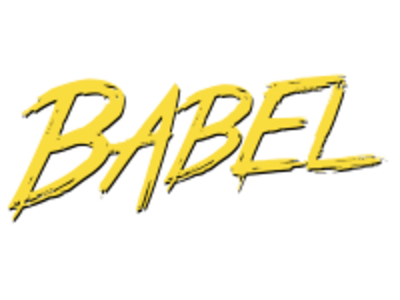
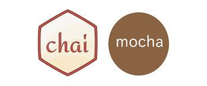

Key Technologies We Use
Frontend
Our web and software product development company
offers a full range of web development services and
has competence in custom application development
using React.js technology. The company’s portfolio includes
a range of projects with React.js, such as web-based video
conferencing apps, stock trading and ecommerce solutions,
along with other IT solutions for clients from the USA,
Canada, EU and UK.

TypeScript is an open-source programming language developed
and maintained by Microsoft. It is a strict syntactical superset
of JavaScript, and adds optional static typing to the language.
TypeScript is designed for development of large applications and
transcompiles to JavaScript.
Our IT software development company has extensive experience in
the production of cutting-edge web applications and tools, including
Webix JavaScript UI Widgets Library. Deep expertise with the Webix
technology allows us to offer Webix customization and development
services to any type of business. Webix provides highly customizable
widgets which can make a valuable addition to any web solution.

Babel is a toolchain that is mainly used to convert ECMAScript
2015+ code into a backwards compatible version of JavaScript in
current and older browsers or environments.

Gulp is a task Manager for automatic execution of frequently
used tasks involved in web development like minification,
concatenation, cache busting, unit testing, linting, optimization,
etc., written in JavaScript programming language.
Autoprefixer is a PostCSS plugin which parse your CSS and add
vendor prefixes.
Sass (Syntactically awesome style sheets) is a preprocessor
scripting language that is interpreted or compiled into Cascading
Style Sheets (CSS).
Bluebird is a fully-featured Promise library for JavaScript.
The strongest feature of Bluebird is that it allows you to "promisify"
other Node modules in order to use them asynchronously.
Backend
Our firm has excelled in backend development too, and uses
Node.js as one of the key backend technologies. Node.js has
been successfully applied in a wide range of real-time applications,
such as chat apps, field service apps, workforce and facility
management apps, web portals, content management and others.
ASP.NET development services rendered by our outsourcing software
development firm enjoy a high reputation among clients who are in
need of efficient custom solutions, integration of existing .NET
solutions into any development environments, migration to .NET or
require 3rd party .NET customization.

MongoDB is a free and open-source cross-platform
document-oriented database program
Redis is an open-source in-memory data structure project
implementing a distributed, in-memory key-value database with
optional durability. Redis supports different kinds of abstract
data structures, such as strings, lists, maps, sets, sorted sets,
hyperloglogs, bitmaps, streams and spatial indexes.
Express.js is a web application framework for Node.js, released as
free and open-source software under the MIT License. It is designed
for building web applications and APIs. It has been called the de facto
standard server framework for Node.js. Express is the backend part of
the MEAN stack, together with MongoDB database and AngularJS frontend framework.

-
Mongoose provides a straight-forward, schema-based solution to model
your application data. It includes built-in type casting, validation,
query building, business logic hooks and more, out of the box. In simple
words, Mongoose acts as an intermediate between mongodb and server
side language(like NodeJs)

Mocha and Chai can be used for testing just about any type of
Node project, whether it's a library, command-line tool, or even
a website. Each of these libraries are very useful for validating
your code and should be used in just about all of your Node projects.
Amazon Web Services (AWS) The technology allows subscribers
to have at their disposal a virtual cluster of computers, available
all the time, through the Internet. AWS's version of virtual
computers emulate most of the attributes of a real computer
including hardware (CPU(s) & GPU(s) for processing, local/RAM memory,
hard-disk/SSD storage); a choice of operating systems; networking;
and pre-loaded application software such as web servers, databases,
CRM, etc.
Amazon Elastic Compute Cloud (EC2) forms a central part of Amazon.com's
cloud-computing platform, Amazon Web Services (AWS). A simple web-based
service interface allows you to access computing power and configure with
minimal resources. It gives users full control over computing resources as
well as an accessible environment to work in. The service reduces the time
required to get and load a new server.
Amazon Simple Email Service (Amazon SES) is a cloud-based email sending
service designed to help digital marketers and application developers send
marketing, notification, and transactional emails.
Amazon Simple Queue Service (SQS) is a fully managed message queuing
service that enables you to decouple and scale microservices,
distributed systems, and serverless applications. SQS eliminates
the complexity and overhead associated with managing and operating
message oriented middleware, and empowers developers to focus on differentiating
work.
Amazon Simple Notification Service (SNS) is a highly available, durable, secure,
fully managed pub/sub messaging service that enables you to decouple microservices,
distributed systems, and serverless applications.
Amazon S3 or Amazon Simple Storage Service is a "simple storage service"
offered by Amazon Web Services (AWS) that provides object storage through
a web service interface. S3 can be employed to store any type of object which
allows for uses like storage for Internet applications, backup and recovery,
disaster recovery, data archives, data lakes for analytics, and hybrid cloud
storage.
Infrastructure
and
Process
Jenkins is an open source automation server written in Java.
Jenkins helps to automate the non-human part of the software
development process, with continuous integration and facilitating
technical aspects of continuous delivery.

Docker is a computer program that performs operating-system-level
virtualization, also known as "containerization". Allows you to
"package" an application with its entire environment and dependencies
into a container that can be ported to any Linux system with support
for cgroups in the kernel, and provides a container management environment.

Prometheus is an open-source systems monitoring and alerting toolkit
originally built at SoundCloud. Prometheus works well for recording any
purely numeric time series. It fits both machine-centric monitoring as
well as monitoring of highly dynamic service-oriented architectures.
In a world of microservices, its support for multi-dimensional data
collection and querying is a particular strength.
Grafana is a package for visualizing monitoring data.
Telegraf is part of the TICK Stack and is a plugin-driven
server agent for collecting and reporting metrics.